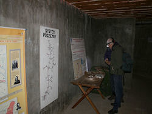
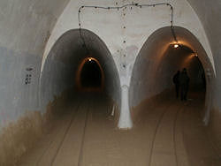
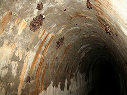
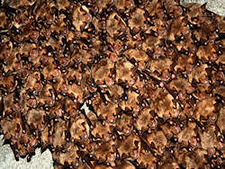

Międzyrzecki Rejon Umocniony
Miedzyrzecz Fortification Region - Ostwall
Useful Information
|  |
| Image: small exhibition about the fortification. © Stefan Zaenker. |
| Location: | Pniewo-Katawa, municipality of Miedzyrzecz, the province of Gorzow. |
| Open: |
JAN to MAR Tue-Sun, Hol 10-16. APR to SEP daily 10-18. OCT to DEC Tue-Sun, Hol 10-16. Closed 01-JAN. Last visit 90min before closing time. [2011] |
| Fee: |
Short tour:
Adults PLZ 14, Children (6-16) PLZ 12, Children (0-5) free. Long tour: Adults PLZ 17, Children (6-16) PLZ 15, Children (0-5) free. [2011] |
| Classification: |
 World War II Bunkers World War II Bunkers
|
| Light: | electric |
| Dimension: | |
| Guided tours: | Short tour: D=1.5h, L=700m. Long tour: D=2.5h, L=1,500m. |
| Photography: | |
| Accessibility: | |
| Bibliography: | |
| Address: |
Festungsfront Oder-Warthe Bogen, Pniewo 1, 66-300 Miedzyrzecz, Tel: +48-95-7419999.
E-mail: Owner: Municipality of Miedzyrzecz, 66-300 Miedzyrzecz, Rynrk 1, Tel: +48-95-412311 Fax: +48-95-412385. Tourist Organiser: Tourist Agency ”Pro Nature„ Sp z. o. o., Pniewo, 66-303 Kalawa, Tel: +48-95-411320, Fax : +48-95-412 931 Mobile (090) 616465. |
| As far as we know this information was accurate when it was published (see years in brackets), but may have changed since then. Please check rates and details directly with the companies in question if you need more recent info. |
|
History
|  |
| Image: train station with two railroad tunnels. © Stefan Zaenker. |
| 1932 | planning started. |
| 1934 | bunker system built. |
| 1935 | visited by Adolf Hitler. |
| 1938 | construction stopped in favour of the Westwall. |
| JAN-1945 | broken during the Vistula-Oder Offensive in only three days. |
| 1951 | scheduled completion date. |
| 1957 | abandoned by the Polish army. |
| 1980 | Nietoperek Nature Reseve protects a part of the tunnels. |
| 1999 | with Nietoperek II Nature Reseve the complete underground is protected. |
Description
|  |
| Image: tunnel with numerous bat colonies. © Stefan Zaenker. |
These are underground fortifications built by the Germans during World War II. They are also known as the Ostwall (East Wall). They consist of multi-storey bunkers and tunnels. The tourist is taken on a route through the ”Scharnhorst„ Bunkers. This area is a large winter quarters for bats in Europe. A part of this area is designated as the ”Wild Life Sanctuary Nietoperek„.
Between May and October there is an exhibition of exotic live bats which includes vampire bats. There is a permanent exhibition of bats, weapons, guns, tanks, rockets etc. Other facilities include Gift shop, Cafe, paid parking, torch rental and sale of torches and batteries.
Text by Tony Oldham (2002). With kind permission.
|  | ||
| Image: a colony of bats. © Stefan Zaenker.
The Oder-Warthe Bogen (Oder-Warthe arc), also known as Ostwall (Eastern Wall), is a fortification built by the Nazis during World War II as a defence against the Russians. The official name was Grenzschutzbefestigungsanlage III (border fortification 3) or Festungsfront Oder-Warthe-Bogen. Today is is called Międzyrzecki Rejon Umocniony (Miedzyrzecz Fortification Region) and is a vast system of partly destroyed bunkers and surface forts, some 90km long between the rivers Oder and Warta. Planning for this fortification stared in 1932, which means before the Machtergreifung (takeover) by the Nazis. Construction was started in 1934, long before the war, which was actually illegal according to the Versailles treaty. Completion was planned for 1951, but construction was stopped in 1938, so it was actually never completed. And when the Soviet Army reached the defence line during the Vistula-Oder Offensive in January 1945, the Germans were not able to man the line in time and it was broken in only three days. After the war it was used by the Polish army, but after they abandoned the bunkers in 1957 they were left undestroyed and open. Soon the tunnels were used by animals, especially bats. The nearby town was originally named Meseritz, but after the Germans were thrown out after World War II the town was renamed Międzyrzecz. This is the Polish diminutive of bat, the area is well known for its bats. The 30km long underground system of tunnels is the largest bat refuge of Europe, home shelter to some 32,000 bats of 12 species during wintertime. Since 1999 the complete underground tunnels are protected by the Nietoperek Nature Preserve. The entrances were closed with bat doors, bar gates which allow the crossing of bats only. At Pniewo is the central tourist section of the fortification. It is located at the Panzerwerk 717, a fortifiction built against tanks. There is a museum and the tunnels are well developed with electric light. The museum is open all year, while the tunnels are accessible only during summer. In winter the tunnels are closed completely to protect the bats.
|

 Search Google for "Miedzyrzecz Reinforced Region"
Search Google for "Miedzyrzecz Reinforced Region" Google Earth Placemark
Google Earth Placemark Miedzyrzecz Fortified Region - Wikipedia
(visited: 20-MAR-2011)
Miedzyrzecz Fortified Region - Wikipedia
(visited: 20-MAR-2011) :: Międzyrzecki Rejon Umocniony ::
(visited: 20-MAR-2011),
official website.
(
:: Międzyrzecki Rejon Umocniony ::
(visited: 20-MAR-2011),
official website.
(
 )
)